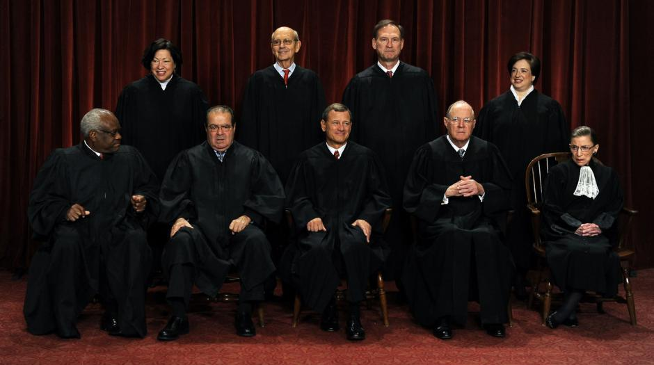

Conclusions

Exploratory Summary
Analyzing the Supreme Court is not a trivial task. There is much nuance within the judicial system not only in how Justices review cases but also how lawyers present citations/arguments to support these cases. However, we have shown that it is still possible to glean interesting insights into the how the Supreme Court operates. Specifically, we have demonstrated that, while there is some variance in what cases reach the Supreme Court, there does not appear to bias in the how the Supreme Court selects cases for review. Based on our analysis of the data, the most likely case to reach the Supreme Court would originate in California, have involved a state-level Supreme Court, and concern a criminal defendant’s civil rights. Furthermore, the most likely outcome of a review would be to reverse the decision made by the source, Federal Appeals court.
Bias Summary
The Supreme Court is an apolitical, impartial institution. Multiple methods, including profiling and clustering Justices, indicated that the Supreme Court does not vote for ideological reasons. While it is true that certain Justices have tendencies to vote conservatively or liberal on particular legal issues, none of the Justices have a profile that suggests they vote dogmatically conservative/liberal on every issue. Additionally, there does not appear to be a strong correlation between the judicial ideology that a particular Justice adopts and the political ideology of the President that appoints them. This result is a triumphant ratification of the US judicial system. Justice truly is blind.
Predictions Summary
Each model that we have presented here has some predictive power but is limited due to the complexity of the Court. Case outcome prediction is complicated for a number of reasons. First, there are only nine Justices with only five possible outcomes in votes (9-0, 8-1, 7-2, 6-3, and 5-4). Furthermore, the votes are essentially binary - unconstitutional vs constitutional - with the vast majority of outcomes either one sided (9-0) or split (5-4). Features are scored as single, independent categories. For example, each case is listed as relating to only one law issue area, where in reality, cases are typically multifaceted with issues regarding several legal areas. Because the outcomes of the cases are somewhat rigid and because there are only nine Justices, the Court does not ascribe to the law of large numbers which is an underlying assumption of many prediction models. Additionally, the citation network analysis is limited due to the fact that both the petitioner and respondent tend to cite the same cases in their briefs. This cross referencing of citations between the lawyers on both sides on a case is essentially an argument, counter-argument and any citation that is pertinent will need a rebuttal. Thus, citations are a limited feature in analyzing whether the petitioner or respondent will win the case.
What’s Next?
The results of our analysis should serve as a stepping stone and aid to legal scholars for a further understanding of the how the US judicial system operates. Several refinements to our model could be made. First, the same random forrest, logistic regression and citation network models presented here could be expanded to analyze the lower court case outcomes. It is reasonable to suggest that judges in the lower level courts, who are do not go through as rigorous of a vetting processes as the Supreme Court Justices appointments, will have more variance and potential bias in their review of cases, which should enhance the predictive power of our models. Additionally, it would be interesting to work with legal experts to expand the features of each case. As mentioned, cases really usually involve several different legal issues with a range of issue area, even though the database lists only one law type, issue area etc. for each case. A more granular knowledge of the case issues should enhance our model’s power. Finally, it would be fun to further cross-validate our model by examining the outcomes of the cases currently being reviewed by the Court!